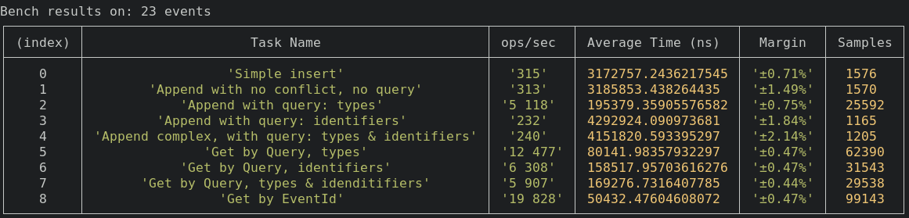
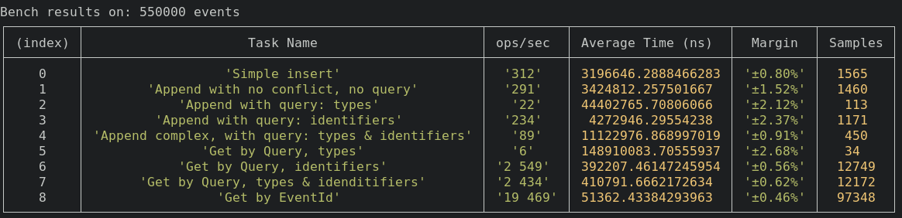

Library to do event sourcing while keeping the focus on events and not on aggregates.
Inspired by this talk: https://www.youtube.com/watch?v=0iP65Durhbs
npm install sorci --save
yarn add sorci
The idea was to be able to do Full Event Sourcing without the need of an event store. So for now there is only one implementation of Sorci => SorciPostgres. Maybe other implementation will be done later. This library has never been used in production yet. Use at your own risk :)
import { SorciPostgres } from "sorci";
const host = "localhost";
const port = 54322;
const user = "postgres";
const password = "postgres";
const database = "postgres";
const streamName = "Your-Stream-Name";
const sorci = new SorciPostgres(
host,
port,
user,
password,
database,
streamName
);
// This will create everything needed to persist the events properly
await sorci.createStream();
// Small exemple of adding an Event with no impact (No concurrency issue)
await sorci.appendEvent({
id: "0a19448ba362",
type: "todo-item-created",
data: {
todoItemId: "0a19448ba362",
text: "Create the Readme of Sorci.js",
},
identifier: {
todoItemId: "0a19448ba362",
},
});
The library create 2 tables:
The writable table act as an append log. The read-only is a synchronize copy of the writable table.
It's a technical constraint. To make sure an event can be persisted the library completely lock the writable table. Wich mean it's also unreadable during write. The read-only table allow read while event are beeing persisted.
Full References - here
Unit test are testing proper appending, specialy focus on concurrency issues.
yarn run test:unit
Performance vary with volume of events in the stream. But for most application it should not be a problem.
Those benchmark are done on a dell xps pro.


~300 ops/s
This is for reference. To know the baseline of Insert.
~300 ops/s
This is when we want to persist an event that we know don't impact decision. The library will be very close to baseline. It's almost a simple insert.
Here we have a big variation, in the first exemple there is only 2 event of the selected type course-created, so getting the lastVersion is fast
In the second exemple we have 55 000 event of types course-created it take a bit longer to get the lastVersion
This should not be a big issue because filtering only by types should not happen very often. The option remain available if necessary
~230 ops/s
Here volume should not impact the persistence. Identifier has a gin index. Wich make retrieving event by id fast.
This is great because it will be one of the most use way of persisting event.
Here volume is impacting the results. But performance are for most cases acceptable. On a benchmark with 1M events the library still score a 50 ops/s
Here volume is important, in the second exemple we are retrieving 55 000 events whereas in the first we retrieve 2.
Here volume is important, In those exemple we retrieve the same amount of event but going through the btree index is a bit slower since there is more data.
Perfomance should be good for most cases
Here volume is important, In those exemple we retrieve the same amount of event but going through the btree & gin index is a bit slower since there is more data.
Perfomance should be good for most cases
~20 000 ops/s
This is for reference. To know the baseline Query.
Requirement: Docker installed
yarn run bench
It will take around 30s ~ to load the half a million event into the table.
Generated using TypeDoc